If you are here you know how I do things…I pour my heart out into everything I decide to do. This will be the guide to get you some King Kong Back Strength, Muscle, Durability, Mobility and Function.
We are talking Width, Thickness, Performance, injury prevention, and moving your body with complete freedom.
When it comes to performance, aesthetics, filling out the shirts in your wardrobe, or even getting girls to look at you twice.
The back truly reigns KING!
Whether we are talking about physical performance or presence…
Understand that it is your aura and presentation as a man.
Have you heard of the term…“He put the team on his back”?
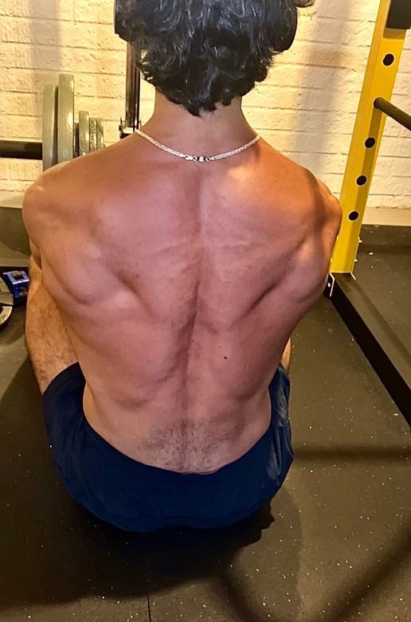
None - 516×781 (jpeg)
There is a reason why they don’t say chest.
Lesson in there?
It’s due to the sheer size and capability of the back itself.
Most problems people encounter come from a weak posterior chain (back side of your body).
Because we all love to focus on the vanity muscles.
We put a high level of emphasis on the muscles we can see in the mirror.
Which is a HUGE MISTAKE!
The capability of your back is beyond words because it is strong, large, and has THE ability to absolve you from a lot of the injuries you encounter.
With a strong back your physical performance goes to an entirely different level.
Think of some of the best fighters, bodybuilders, and athletes on earth.
All have incredibly strong and dominating backs.
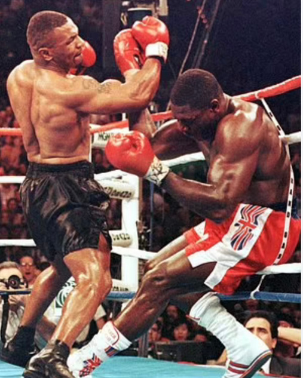
None - 507×633 (jpeg)
None - 456×695 (jpeg)
Page 4
Dimensions: 595.5 × 842.2 pts
If your back is lagging behind…you will be capped on your genetic ceiling.
This area of the body is the key to the physical performance, strength, explosiveness, power, & physique you’ve been chasing.
Because if you have your Back DIALED…you will look, perform, and feel better than the VAST majority of people who workout consistently inside the gym.
It is THE PLACE on your body where you get the most gusto.
This is what this document and my training philosophy is ALL ABOUT.
Maximizing Results in as little of time as possible.
And that means we need to allocate our energy in the right places.
Have you seen someone with a WEAK posterior chain and walking around with ZERO PRESENCE?
That's because people are focused on the vanity muscles and not the muscles that move the needle, causing the shoulders to round and that's where the real problems just start.
It’s the key to walking around with a physical presence and air to them without thinking even thinking about it. That’s the type of energy people are drawn to.
BUT that doesn’t mean we don’t take advantage of methods that give us the results we are after.
And those methods are unbelievably straight forward. That's what I will write out in the rest of this guide, because I want to get you what you are looking for!
So I am going to organize it into different sections so you can simply choose to go to the section that you are struggling with most.
But I HIGHLY recommend going through this guide in full.
You can click on ANY section below to jump straight to the content that speaks to you. No endless scrolling required.
SECTIONS OF THE GUIDE:
The Undeniable Standard: Becoming a Natural Crusader
Anatomy
Strength
Muscle Growth
Mobility
Building Injury Resilience
The SNIPER’S BACK Day (The Back Day Formula)
None - 516×648 (jpeg)
Page 6
Dimensions: 595.5 × 842.2 pts
THE UNDENIABLE STANDARD: BECOMING A NATURAL CRUSADER
What does it mean to be Undeniable?
To be undeniable is to be unshakable; unforgettable.
The type of presence that doesn’t merely exist but demands attention, even when silent.
An undeniable man doesn’t chase validation.
He commands it, simply by being .
He isn’t swayed by fleeting trends or superficial praise or pursuits.
He is grounded, immovable, and magnetic.
Every man has to make this choice: to be undeniable or to be invisible.
This is the path of the Natural Crusader
This path isn’t for the faint of heart… it’s for the man who knows that true power comes from within, who’s ready to claim his place in the world.
As a Natural Crusader, you commit to living by an unbreakable code, a set of rules that turn effort into impact , muscle into presence , and discipline into absolute mastery.
These rules aren’t just words…they’re the steps to becoming the one who stands out, the one who leaves a mark so strong it’s unmistakable.
These rules are the undeniable standard .
Page 7
Dimensions: 595.5 × 842.2 pts
RULES OF THE NATURAL CRUSADER:
RULES OF THE NATURAL CRUSADER:
RULES OF THE NATURAL CRUSADERS:
Lead with Heart, Die on Your Sword 1.
Empty the Energy Clip Every Day 2.
Never Go to Bed Hungry 3.
Make Every Decision from Strength 4.
Food is Fuel, Not Entertainment 5.
Burn the Past 6.
No Counting, Just Consuming 7.
Master Desire (Dangle the Donut) 8.
Walk Into the Storm 9.
Ignore Your Own Hype 10.
Live By Your Standard 11.
Reject All Shortcuts 12.
Wear Your Scars Proudly 13.
Face Fear as a Challenge 14.
If I had learned these 14 rules sooner, my life would be unrecognizable today. Click the video below to see each one explained and why they could be the turning point for you too.
These rules define what it means to be undeniable.
They aren’t just principles, they’re a new way of being.
These rules are how you become unforgettable, how you become the man others want to follow, emulate, and respect.
This isn’t a phase…it’s a movement.
It’s a commitment to something greater than self.
A legacy that speaks without words.
If you’re ready, there’s no going back.
The choice is yours: either take the hard road to becoming unforgettable or fade into the crowd.
This is about leaving a legacy so strong, so undeniable, that the world will never forget you.
Welcome to the standard of the Natural Crusader.
None - 580×1162 (png)
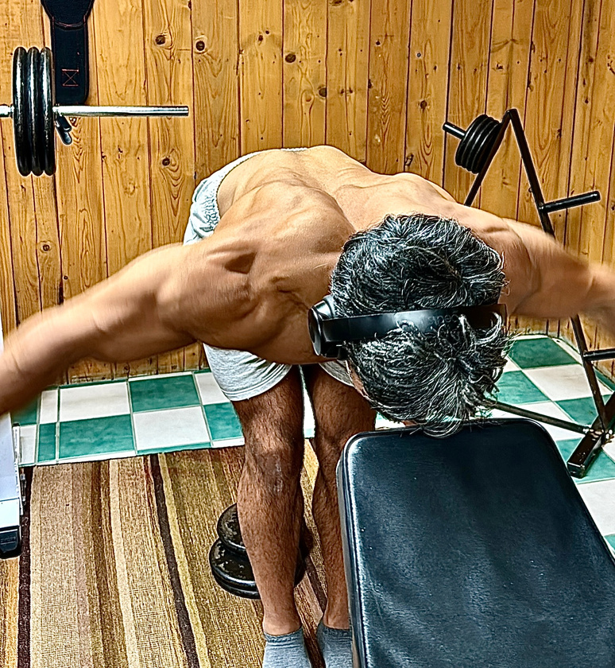
None - 774×840 (jpeg)
Page 9
Dimensions: 595.5 × 842.2 pts
ANATOMY
In order for us to build the back correctly we gotta know what the fuck is going back there.
“Uncle Rommy…no lectures bro, please”.
Unlike your former professors, I am going to give you information that’ll make it SEAMLESS to acquire yourself a back that resembles a turtle shell.
Once you understand the anatomy of the back, it's going to be 100x easier to:
Target the parts that will actually grow and sculpt your back 1.
DRAMATICALLY INCREASE Strength 2.
Build Injury Resilience 3.
None - 600×800 (jpeg)
On the other end of the “boring” information is everything that’ll set us up to build an UNDENIABLE physique.
Saddle up & I will make it clear just how you can be as effective as possible with your time. With that said, the back is gigantic & there are a ton of muscles involved.
So let's get into it.
Page 10
Dimensions: 595.5 × 842.2 pts
Trapezius
Posterior Deltoid
Teres Major
Teres Minor (& the 3 other Rotator Cuff muscles)
Rhomboids
Erector Spinae
Latissimus Dorsi
The first muscle we are going to get into is completely misunderstood:
None - 508×731 (jpeg)
The Trapezius.
Page 11
Dimensions: 595.5 × 842.2 pts
The Trapezius itself is divided into 3 Separate Parts:
Upper Trap Middle Trap Lower Trap
There are ways we can do the same exercises you are accustomed to doing inside the gym with a ever so slight twist that will make ALL THE DIFFERENCE.
You see, I am not the type of guy to give you agonizingly boring band work exercises that leave you with zero added muscle or strength.
But there is just ONE PIECE left of the puzzle we need to nail down.
And again to reiterate…this is perhaps the most misunderstood muscle & a big part of injury resilience as a whole.
None - 410×508 (jpeg)
I CALL THIS THE “THE IGNORED MUSCLE”, THE MUSCLE THAT GETS ABSOLUTELY NO TIME OF DAY.
And when abandoned, disrespected, and overlooked, it'll make you pay for it.
And what you don’t realize is its the key to all of this coming together. The puzzle piece to becoming TRULY indestructible.
Page 12
Dimensions: 595.5 × 842.2 pts
This muscle is gigantic, and somehow people don’t realize that could mean there is some significance.
In a second I am going to tell you exactly how to train traps the right way. And I know what you are thinking…Shrugs?
No man…that's the issue!
Most people equate traps to carrying the heaviest possible dumbbells and shrugging their life away.
Because when you get this right, you will have LAYERS of muscle loaded in those areas giving an edge on everyone else.
Those LAYERS make you multiple times stronger.
Being able to stabilize high loads with a real defense system that allows you to become much more resilient to possible injuries.
UPPER TRAPS: You should think of this as neck support which is important …but the neck is not something to completely abuse.
It's about how we add support to the neck which helps fix our head positioning but that is just the tip of the iceberg.
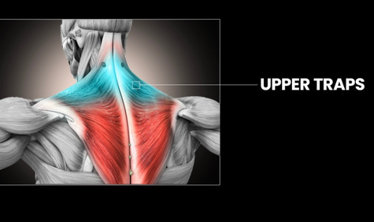
None - 475×282 (jpeg)
EXERCISE EXAMPLES FOR UPPER TRAPS: (CLICK EXERCISE FOR A VIDEO TUTORIAL)
LOWER TRAPS: The lower traps play an important role in upper body strength, the health of the shoulder girdle, and overall posture, so naturally, they deserve MOST of our attention.
The lower traps pull your shoulder down & helps out with shoulder blade rotation during any overhead movements.
This is why they are ESSENTIAL for stabilizing the shoulder joint and offering additional protection. This is a HUGE part of your defense system against shoulder injuries. And personally I call the Lower Trap …THE POSTURE MUSCLE.
Involved HEAVILY with maintaining proper posture during lifts and in your everyday life.
This is the base and foundation of your building that is your body
In ORDER of importance:
Lower Traps (MOST IMPORTANT) 1.
Mid Traps (next level) 2.
Upper Traps (last place) 3.
If you want your hard work to give you as many results as possible…this is how you prioritize.
None - 541×372 (jpeg)
Next…
Posterior Deltoids
This is probably not going to be what you expected. You guys that are throwing in “rear delts” at the end of Back Day.
Are making a HUGE mistake.
You need to be training these on your shoulder day as a STAPLE of your lift.
Most prioritize the front (anterior) and side (lateral) head of the shoulder but not very many of you understand just how important the back part (posterior) head of the shoulder is.
You think its an “afterthought”. I’ve heard more people say than I can count “I'll throw it in at the end or on a back day”.
Mistake.
You aren’t taking advantage of this SIGNIFICANT muscle properly. And if you did your bench, shoulder press, & back lifts would BLOW TF UP. Also those round & capped out shoulders that you think are only reserved for the steroid abusers…
Page 15
Dimensions: 595.5 × 842.2 pts
Yeah you’d have those too without the risk of heart failure and an early grave.
I go way deeper into this and how to do so efficiently with maximum effectiveness…
And all those details are in my shoulder guide but this is the back guide
So let's get “back” to it.
EXAMPLE EXERCISE FOR THE REAR DELTS: (CLICK EXERCISE FOR A VIDEO TUTORIAL)
Reverse Pec Dec Flyes
Next…
Teres Minor
The teres minor is one of the 4 rotator cuff muscles that make up the rotator cuff.
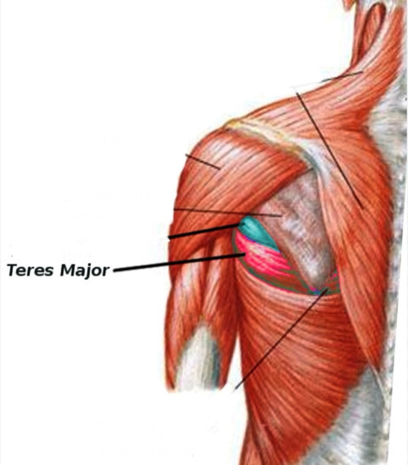
None - 516×588 (jpeg)
Playing a HUGE part in our ability to become much more resilient to injuries
How?
Becoming more resilient to injuries by keeping the shoulder joint in place. and plays a big role in shoulder stability and external rotation.
Because the role of the teres minor is to keep our shoulder stable through external rotation movements.
Meaning it allows stabilization of the shoulder joint.
This muscle works with the other rotator cuff muscles to protect the shoulder during movements involving rotation or heavy loads.
The rotator cuff itself is your shoulder’s built-in support system that stabilizes the joint and allows it to move freely.
Regardless…whether we are talking about strength, aesthetics, or purely injury resilience….
It’s critical.
Let’s get into EACH of the 4 muscles & their primary roles within the rotator cuff
1.The Supraspinatus: This is how you are able to initiate lateral raises…this part of the rotator cuff allows you to lift your arm to the side.
2. The Infraspinatus: This part of the rotator cuff helps you rotate your arms EXTERNALLY. This is important because most our posture and shoulder health issues stem from TOO MUCH INTERNAL ROTATION.
Which makes it pivotal for posture & balancing out the internal rotators along with providing stability during pressing movements.
Page 17
Dimensions: 595.5 × 842.2 pts
3. The Teres Minor: We talked about this earlier but just to reiterate. The Teres Minor will work WITH the infraspinatus for external rotation & stability of the shoulder itself.
They coordinate together to keep our shoulders from rolling forward which better facilitates ….you guessed it.
Posture & symmetry in your physique.
4. The Subscapularis: Now this part of the rotator cuff allows us to internally rotate the arm. This is in opposition to the infraspinatus & teres minor.
The subscapularis provides balance with shoulder movements especially when we are pressing or hitting cable flyes.
Overview:
The rotator cuff as a whole keeps your shoulder joint in place during heavier lifts…whether that's overhead pressing, lateral raises, chest fly variations, etc.
And when we train these muscles properly…we prevent our shoulders from rolling forward which is not only going to improve your physical stature but AID in your Back Gains.
Even aesthetically it prevents muscle imbalances between the front & back part of your shoulders which will only help you build muscle symmetrically.
And when our rotator cuff is WEAK…we improve our chances of impingements, tendonitis, and God forbid tears.
All typically sparked from some variation of pressing movements.
A strong rotator cuff will only allow you to build resilience against possible injuries; these muscles help build INJURY RESILIENCE.
It’s only going to keep your posture in check, improve shoulder aesthetics, and help you avoid injuries.
Page 18
Dimensions: 595.5 × 842.2 pts
THE 3 EXERCISES FOR COMPLETE ROTATOR CUFF WORK: (CLICK EACH EXERCISE FOR A VIDEO TUTORIAL)
Facepulls 1.
Dumbbell Shoulder External Rotations 2.
LU Raises 3.
None - 516×344 (jpeg)
Next...
Teres Major
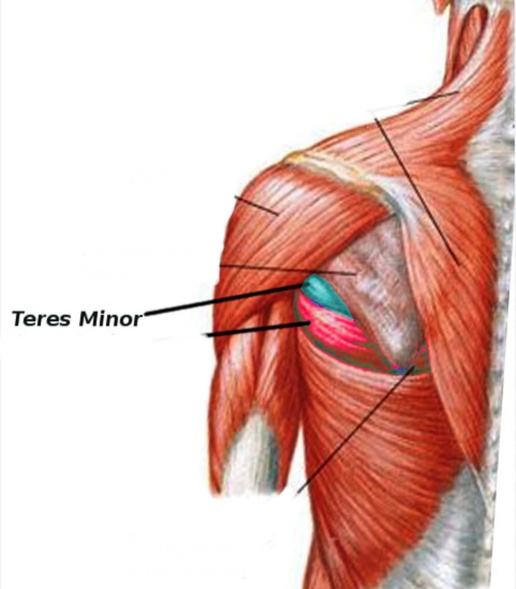
None - 516×589 (jpeg)
Some people refer to this muscle as the "little lat". Why?
Because it helps the latissimus dorsi (lats) with any movement involving the shoulder itself.
This muscle works as the exact opposite of the teres minor...
Because it’s role is internal rotation.
Making it SIGNIFICANT when it comes to building strength & size.
Helping with BOTH shoulder adduction and extension
The rhomboids consist of two muscles with the major and minor sitting between your shoulder blades. This is where the magic is in both strength & added depth of muscle to your back.
Functionally…they help retract the shoulder & stabilizes the upper back.
This is CRUCIAL for your posture. With STRONG rhomboids, you keep your shoulders aligned (preventing imbalances) & prevent SLOUCHING & nerd neck.
This is because retracts and stabilizes the scapula ALONG WITH assisting in shoulder rotation to then maintain proper shoulder alignment. This muscle is PIVOTAL for both aesthetic appeal & overall proper function with real strength.
“But what is the difference between the major and minor?”
Good question…there is a reason I have them in the same section because they pretty much do the same thing.
But these are the 3 notable differences:
Size Location Function
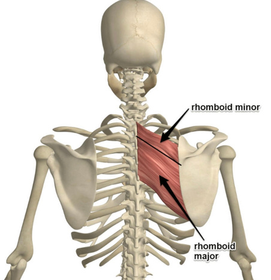
None - 452×468 (jpeg)
Page 21
Dimensions: 595.5 × 842.2 pts
Size:
Major is bigger, minor is smaller.
Where it’s located:
Minor is higher up, major is right below it.
The difference in function:
Well…they both do the same thing, BUT the major handles more of the heavy lifting, while the minor assists with stability and smaller movements.
Strong rhomboids not only give you a much thicker & more defined upper back but play a SIGNIFICANT role in keeping your shoulders healthy allowing for heavier lifts without the fear of “hurting yourself”.
EXERCISE EXAMPLE FOR THE RHOMBOIDS: (CLICK EACH EXERCISE FOR A VIDEO TUTORIAL)
You can see from the diagram the Erector Spinae muscles runs along your spine, from your lower back ALL THE WAY to the back of your neck.
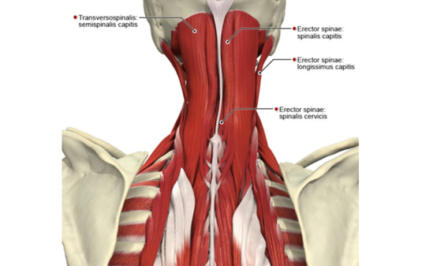
None - 549×337 (jpeg)
Clearly they matter but here’s why:
You can imagine they’d help you keep your back upright.
It stabilizes the Spine which allows the spine to stay steady when you move whether you’re bending, twisting, or lifting with power.
“But what are the actual benefits of it as it pertains to my goals?”
BEAUTIFUL Posture
Again the erectors run through the back of your neck and directly affects the posture of your body.
Simply put…strong erectors translate to better posture, elimination of lower back pain, and build injury resilience.
Whether you are hitting you are hitting squats, deadlifts, or any other back movement inside the gym…the spinal erectors stabilize the back itself. Actively helping you lift in safer positions & much more effectively.
If you have strong erectors… you have an athletic edge.
Needless to say the erector spinae is pretty important for a strong back, good posture, and to further progress your training.
Page 23
Dimensions: 595.5 × 842.2 pts
EXAMPLE EXERCISE FOR ERECTOR SPINAE: (CLICK EXERCISE FOR A VIDEO TUTORIAL)
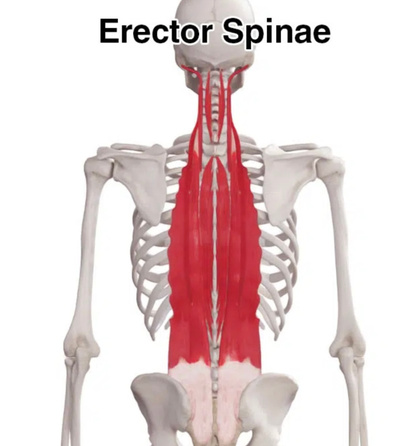
None - 416×446 (jpeg)
Hyperextension Rows
None - 403×425 (jpeg)
Next….we have the Fan Favorite
Latissimus Dorsi
The lats are HUGE…so big that it is the BIGGEST MUSCLE in your back.
This is why us gym bros call them “lat wings” & is involved in most pulling movements.
Whether you are hitting pull ups, lat pulldowns, rows, or even deadlifts, the lats are doing a lot of work. Even for athletes…strong lats only improve your power and ability to generate force.
And from a pure posture standpoint because the lats help keep your spine stable.
They help prevent our shoulders from rounding forward.
The lats are all about pulling power…upper body strength, posture, and athletic performance.
Strengthening them not only gives you that "V-taper" look we all love.
But does a lot of the heavy lifting to keep your body at PEAK health which helps keep our body resilient against injury.
Understand …having a strong back that can lift obscene weight.
Is simply a game of touching every muscle in your back.
But in the CORRECT SEQUENCE.
Meaning picking the correct exercise in the correct order.
Every single exercise has its OWN UNIQUE ADVANTAGES.
It’s a game of taking advantage of those advantages without experiencing its limitations.
As you know the moment we enter the gym.
We will never be more fresh …we are at 100% of our gas tank.
The best way to take advantage of this is to LIFT FOR STRENGTH.
Proper Exercise Selection allows a much more effective strategy.
But there are two separate back movements in this regard.
The two movements here to focus on:
Vertical Pulling 1.
Horizontal Pulling 2.
I am here to tell you…although deadlifts are a wonderful exercise.
It’s not one I prioritize in my routine.
Not because “I might get injured”.
But based on personal experience and what my goals are.
I think there are much more efficient and effective exercises that will get us to a point where we are:
Strong Jacked Minimize risk of injury Highly Mobile
Page 26
Dimensions: 595.5 × 842.2 pts
As a result of experiencing injuries and nagging pains over the years (without wanting to compromise on my desired goals).
I simply realized there I had to do a deep dive into the details.
Understand something…to go from nothing to something just requires playing around, trying new stuff CONSISTENTLY.
But to go from something to EVERYTHING.
It is ALL about the tiny & annoying details.
It’s the smallest of iterations that can make the biggest differences.
You have been slamming your head against the same wall.
The plateau you have been experiencing is simply because you haven’t dove into the details that make the difference.
But just because I use the word “details” doesn’t mean they are inherently complex.
It's actually stupid simple.
You should be hitting PR’s often and this framework will MAKE SURE you do so.
All you need to do is follow this exactly.
There are 2 exercises I use to maximize and measure my strength standards for vertical pulldowns:
None - 516×688 (jpeg)
Pull-Ups (weighted when the time comes) Any Lat Pulldown Variation
Page 27
Dimensions: 595.5 × 842.2 pts
ALL YOU NEED IS THESE 2 IN YOUR ARSENAL.
HOWEVER, if you hit a plateau that you can’t break through…
If I am at clear stagnation in my Vertical Pulling Strength...
What I have found helped MOST, believe it or not, is CHANGING your grips.
You will very quickly find the ROOT of where your issues are stemming from on the lift.
Going Wider on the grip itself, Neutral Grip, Underhand, etc.
But what we do is work up to a 3-4 Rep Max (setting a Personal Record).
Take a 3-4 minute break till you are recovered fully.
Then dropping the weight by 20% and get as many reps as humanly possible (setting a Rep Personal record at that 20% drop).
Guess what you do after that?
The same exact thing…drop the weight another 20% and set another REP PERSONAL RECORD.
This is going to build your endurance to sustain heavy lifting.
You should be doing one of these 2 movements listed as the VERY FIRST WORKING SETS INSIDE THE GYM.
And lifting for pure strength, of course we must have our form dialed in but none of that “slow all the way through” bologna.
Dial in on your form for the negative/eccentric portion of the rep and then explode on the rep/concentric portion of the lift.
“Focus on your form on the negative/eccentric portion of the rep” DOES NOT mean you need to go “turtle speed”, just dial in your form to where you are setting up for the press itself.
Page 28
Dimensions: 595.5 × 842.2 pts
And these are the 3 exercises I use to maximize and measure my strength standards for horizontal pulldowns:
T-Bar Rows Barbell Rows Dead Rows
Now if you hit a plateau that you can’t break through on these 3 exercises.
Again, if I am at a clear stagnation in my Back Rowing Strength…
I will use the DEADLIFT randomly to pop up those other lifts.
None - 361×455 (png)
None - 580×1162 (png)
None - 625×695 (png)
Page 29
Dimensions: 595.5 × 842.2 pts
I know I threw some shade at the deadlift earlier but this is where I find it's most effective for my goals.
Use it as a back-pocket option when you’ve exhausted all options.
You will very quickly find the ROOT of where your issues are stemming from on rowing movements.
Now what I do with these is a bit different than the vertical pulldowns.
You should be training in the 4-7 rep range for strength for 90% of your Sets.
And ONCE you’ve gone through your 3 working sets, drop the weight by 20% and get as many reps as humanly possible. This is going to build your endurance to sustain heavier lifts exactly what we are doing with the vertical pulldown drop set…just packaged up a bit differently.
Now at this point we are now set up perfectly for the next phase of our lift.
This is where we move into growing the size of our back.
You ready?
Probably yes, considering this is what probably brought you here but understand, the more strength you are able to execute the better it facilitates the muscle growth portion.
Page 30
Dimensions: 595.5 × 842.2 pts
MUSCLE GROWTH
Strength is so damn important because it allows everything to domino effect in a positive direction.
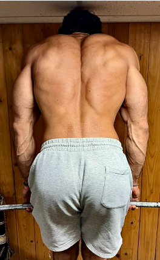
None - 264×428 (png)
If we want to grow we have to lift heavier weights.
BUT this is where people miss the boat.
It’s because we are able to execute the lift in a very specific way with HEAVIER LOADS as a result.
Translating to more stress delivered to the muscle.
That process allows our muscles to grow.
Strength is so damn important because it allows everything to domino effect in a positive direction.
If we want to grow we have to lift heavier weights.
BUT this is where people miss the boat.
It’s because we are able to execute the lift in a very specific way with HEAVIER LOADS as a result.
Translating to more stress delivered to the muscle.
That process allows our muscles to grow.
Page 31
Dimensions: 595.5 × 842.2 pts
The more stress we deliver to the muscle, the more we overload it by growing bigger (progressive overload).
But the beauty of the back is that it can handle extraordinary amounts of stress.
Vertical Pulling movements brings out your lat wings, providing you a V- Taper.
Horizontal Pulling movements thicken up your back…which turtle shell type of definition and cracking.
But if you aren’t lifting intensely…
Nothing is going to happen.
You must learn how to sit in the discomfort of a set.
Learning how to push beyond the comfortable & eventually getting comfortable in that pain.
Is where the difference between average and superhuman physiques is found.
But we can package it up in a way that is extremely effective & is VERY DIFFERENT from what you’ve ever heard.
We SuperSet.
“But Uncle Rommy…supersets aren’t optimal according to the NDHISO who study erector stimulation”.
You know this if you are here. The “mainstream fitness space” lacks in a ton of areas because most people that follow it as gospel.
And most of them do not have the body they want.
Because it requires your entire life and it's a fragile system.
My goal is to maximize my results in as little time as possible with minimal factors involved.
Page 32
Dimensions: 595.5 × 842.2 pts
It’s why my workouts are very metabolically expensive (that means more “calories” burnt and more effective workouts at stimulating muscle growth while losing fat in the process).
This is how I’ve managed to achieve the physique I currently have.
It requires you to be in a certain type of shape to sustain this type of lifting.
BUT the differentiation between me and most people that “superset” inside a gym,
We don’t hop around from machine to machine hogging the entire gym.
Rather we Superset the same muscle.
But taking this even a step further…the SAME EXACT portion of the muscle back to back.
None - 516×766 (jpeg)
Page 33
Dimensions: 595.5 × 842.2 pts
First part of the superset is employing a compound needle moving exercise on the front end and then on the 2nd part of the superset (back end) you follow it up with an isolation exercise to then take that muscle to complete failure.
First part of the superset you want to go as heavy as possible WHILE keeping your reps QUALITY.
NEVER sacrifice on your quality of reps EVER.
And then on the back end of the superset, we lock into the muscle and take that muscle to complete failure with targeted stress.
When you lift this way…. you will know after 1 set, you will know what proper training looks like.
Biasing the SAME MUSCLE Head taking it to complete failure.
To give you a real example:
Let's use the lats.
Lat Pulldown (any variation) is the first part of the superset…and the back end can be Lat Pull ins (straight arm pulldowns).
This is how you elicit real muscle growth and guess what? You burn more energy due to the metabolic expenditure.
Muscles are stubborn to grow because we leave intensity on the table.
But IF you package it up correctly WITH the correct inputs… no matter how shit your back genetics are… it will grow, that's a promise.
The back is incredibly responsive.
REMEMBER, WE ARE SNIPERS!
Page 34
Dimensions: 595.5 × 842.2 pts
Precise, accurate, and nail the target between the eyes.
Unlike machine gun sprayers where they pull the trigger hoping to get lucky, this leaves you very LITTLE chance to fail.
USE THE SUPERSET FRAMEWORK: Compound lift, superset with an isolation exercise on the SAME MUSCLE HEAD!
UNDERSTAND THIS NEW WAY OF HITTING YOUR BACK WILL LEAVE YOU ABSOLUTELY GASSED ANGRY, AND IRRITATED, BUT YOUR BACK WILL RESPOND WITH UNDENIABLE GROWTH.
Anything worth having in this life will be hard.
You are overwhelming the muscle to a point it has legitimately no choice but to grow.
And obviously you can plug and play different exercises as long as it fits in the formula..just make sure the supersets are doubling up on the same head of the muscle.
Targeted Stress is what will give you the muscle growth, fat loss, and strength gains you desire.
Page 35
Dimensions: 595.5 × 842.2 pts
BUILDING INJURY RESILIENCE
I know many people who are plagued with injuries.
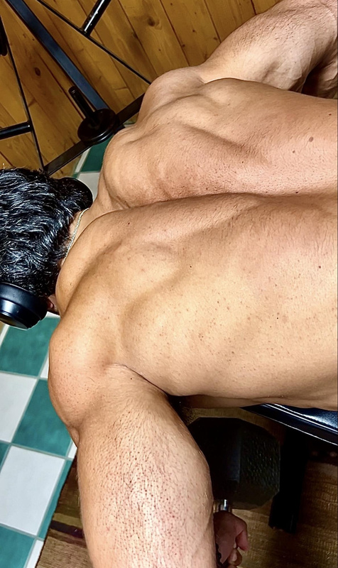
None - 476×800 (jpeg)
Some from the army, from sports, weightlifting in the gym, or from their work.
And if you happen to know or be one of these guys, it completely tanks your way of life.
Limited at every turn, have to be cautious all the time, and second guess every action.
WHEN LIFE IS LIVED LIKE THIS, YOU ARE ACTIVELY SUPPRESSING YOURSELF AND LIVING A LIFE IN HANDCUFFS.
And what's terrible, there was not a damn thing you can do about it, until now.
Think about what life was like before your injury ridden body. I want you to move with COMPLETE FREEDOM and with ZERO hesitation.
I want you to get back to that guy throwing caution to the wind with ZERO FEAR of what could go wrong.
You are playing life on your heels. You are playing life not to lose. You are playing defense.
No one likes to play life on the defense of what could go wrong, constantly factoring different possibilities of what could go bad.
Living for worse scenario.
What if you could completely trust yourself to do whatever it was your mind TRULY desired, having the conviction to know that no matter what I do I can not injure my body even if I tried with all my might and will to do so?
THAT’S WHO THIS IS GUIDE FOR.
Page 36
Dimensions: 595.5 × 842.2 pts
None - 580×381 (png)
Having a big strong turtle shell back is more than just looking like an absolute unit (although very cool and has shit load of perks).
It’s about knowing that your posterior chain of the upper body is dialed in, tight, and injury resilient.
That no matter what, you are operating at your PEAK.
Imagine the energy tap that presents itself to you on the other end.
THE FEELING OF KNOWING WHAT LIFE WAS LIKE BEFORE BEING INJURY RIDDEN AND NOW YOU CAN TRULY DO EVERYTHING YOU HAVE BEEN DREAMING TO DO LIKE BACK IN THE DAY, EXCEPT NOW YOUR BACK IS ACTUALLY INDESTRUCTIBLE, GIGANTIC, STRONG, AND LOOKS DIESEL!
Those “weird muscles” you are neglecting, or possibly didn’t know existed, act like an army.
None - 580×1162 (png)
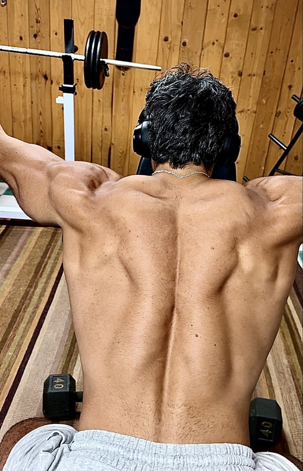
None - 515×800 (jpeg)
Page 37
Dimensions: 595.5 × 842.2 pts
The more skilled soldiers you have on your team the better position you put yourself in to WIN.
This is the guide that is going to CHANGE EVERYTHING!
There aren’t many people who have dove into the details of the BACK the way I have.
Because I had no choice. Suffering from injury after injury, multiple strains, impingements, etc.
But when you suffer from an injury, this is your body talking to you.
It is telling you the limitations & weaknesses you have in your armor.
It's your job to fix those but you don't have to do it alone anymore, because Uncle Rommy has your back.
Building Injury Resilience has everything to do with the support system that backs up the big guns.
If you get that support system on lock & this only sets you up for your heavy compound lifts (vertical pulling & rowing movements.)
We want to build a body that doesn’t break.
And this means we need to be a bit more mindful and intentional with where we place our energy.
Page 38
Dimensions: 595.5 × 842.2 pts
Below are a list of exercises that’ll help strengthen those weaker areas in the back: (CLICK EACH EXERCISE FOR A VIDEO TUTORIAL)
These movements can be done at the end of your Back Day.
You don’t need to be ultra fresh for them, think of it like the finishing touches on a masterpiece that can make or break a beautiful painting…but it doesn’t require much effort.
No failure training if you don't want to, just make sure every single rep is done with pristine execution. If you are doing 10 reps, think of it like 10 sets of 1 rep, that dialed in.
If you are lifting the way you are supposed to this should not be an issue
The benefits of increasing your mobility is more access to muscles that have never felt stimulus
When you increase your range of motion on your exercises you:
Recruit more muscle fibers in the movement leading to greater muscle growth Increase strength through a LONGER range of motion Burn more energy (calories)
None - 516×560 (jpeg)
But if you want to take your mobility up a notch, this is exact list of exercises I’d pick from: (CLICK EACH EXERCISE FOR A VIDEO TUTORIAL)
Set 1: 3-4 Rep Max Set 2: Drop 20% & Set Rep PR Set 3: Drop another 20% & Set Rep PR
Explanation: Work up to a 3-4 Rep Max for 1 Set Take a 3-4 Minute Break Then drop the weight by 20% and set a REP PR Then drop the weight by another 20% and set another Rep PR
2.Horizontal Pulling Back Superset:
3 Sets (DropSet on your last/final set- BOTH EXERCISES...AMRAP) Rowing Movement Compound Exercise- Fail between 5-8 Reps (Pick 1):
If you are currently dealing with a shoulder joint injury
I got something for you (because I love ya for signing up)!
Here is a shoulder rehab exercise sequence.
THIS WAS THE EXACT SEQUENCE I used to Heal my shoulder in 4 days from thinking I tore it. (It also worked on my clients who came into my Full Scale Program with a prior shoulder injury!)
Run these every 2-3 days on top of your training.
This is simply about getting you in the habit of doing these randomly. (CLICK EACH EXERCISE FOR A VIDEO TUTORIAL)
These exercises listed below will move the needle more than any other exercises in terms of directly rehabbing and strengthening your banged up shoulders.
Pick 1 to do every single day 2-3 Sets
Each of these exercises can be clicked on… it’ll take you to a video of ME explaining the movement itself. Your goal like anything else is to get stronger with QUALITY REPS.
Progress on Weight & Progress on Reps (meaning you should see your weights going up OR your reps going up).
Because I appreciate you putting your trust into me in a world where there are so many fake naturals peddling you bullshit, I am here to revive your faith back into the fitness world where there are so much bullshit of people selling you overpriced cookie cutter documents promising if you do it you’ll look like them. From me to you, a library of Back, Trap, & Mobility exercises you can pull from with links of me showing you how to do the movement itself. Enjoy my friend and thank you again for buying this program that will be the difference you’ve been looking for all these years!
You’ve taken the first step which is more than 99% of people.
Picture this: You’ve poured sweat & genuine effort into countless workouts. Experimenting with every diet, yet your dream physique feels just out of reach. Sound familiar? You’re not alone.
This is for you IF:
You’ve been grinding for months (or even years) and still haven’t reached your goals. Progress feels like a cruel joke...that plateau has become your worst enemy. Your fitness journey is a never-ending cycle, getting close to your goal only to slide back. You fuel your body like a champion but can’t seem to pack on muscle. It’s infuriating, isn’t it?
If any of this resonates, LISTEN CLOSELY.
Information is powerful, but information alone won’t transform you. You need something clear & direct with little to NO CHANCE of FAILURE.
That’s why I’m here to offer you The Full Formula
A proven system that has changed lives for men no different than you.
Men who have:
Suffered through endless bulking and cutting cycles. Obsessed over calorie counts and macros. Fought through countless workouts without seeing the results they craved.
This is ONLY for those who are fed up and ready to reclaim their natural dominance. If getting jacked and ripped is merely “take it or leave it” for you, this isn’t for you.
I’ve dedicated over a decade to mastering the art and science of transformation. You don’t have to endure the emotional rollercoaster I did.
I can promise you results in a fraction of the time.
When they say it’s ‘too good to be natural,’ wear it like a crown
But let’s get real for a moment. If you choose to ignore this opportunity today, what happens?
You’ll find yourself exactly where you are now, one year from today. You’ll look in the mirror and think, “How did I end up in the same shape after another year of trying?” You’ll fall back into that self-sabotaging loop, questioning your worth and capabilities.
That’s one potential future.
Fortunately, there’s another path...one that’s bright and EASY to understand. On this path, you:
Achieve the physique of your dreams. Strong, ripped, and confident with your presence commanding respect. Accelerate increases in muscle and strength, fueling energy and overall drive (Winning gives you energy...Losing takes it away) Finally HAVE the goals you’ve chased for years. Standing taller with people in the world finally noticing you.
The version of you that you’ve always wanted does exist.
And it’s on the other side of 6-12 months of focused, deliberate effort.
If you genuinely want this, get out of your own way. Transform into the man you know you can be.